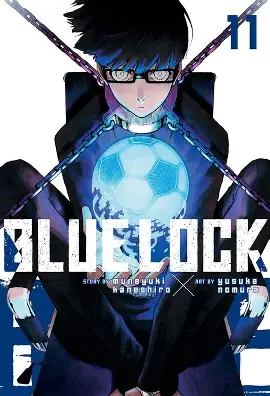

كان يويتشي إيساجي على بعد لحظات من تسجيل هدف كان سيؤهل فريق كرة القدم في مدرسته الثانوية إلى البطولة الوطنية لكن قرارا خاطيء بتمرير الكرة إلى زميله كلفه ذلك الواقع. يتساءل إيساجي، وهو يشعر بالمرارة والحيرة وخيبة الأمل، عما إذا كانت النتيجة ستكون مختلفة لو لم يمررها. عندما يعود المهاجم الشاب إلى وطنه، تنتظره دعوة من الاتحاد الياباني لكرة القدم. من خلال عملية اتخاذ قرار تعسفية ومتحيزة يكون إيساجي واحدا من ثلاثمائة مهاجم تحت سن 18 عامًا تم اختيارهم لمشروع مثير للجدل يدعى "القفل الأزرق".
الهدف النهائي للمشروع هو تحويل أحد اللاعبين المختارين إلى نجم هجومي في المنتخب الياباني. وللعثور على أفضل مشارك، يجب على كل لاعب في الملعب التنافس مع الآخرين عبر سلسلة من المنافسات الفردية الجماعية للوصول إلى القمة. بغض النظر عن اعتراضاته الأخلاقية على المشروع، يشعر إيساجي بأنه مضطر للكفاح من أجل الوصول إلى القمة، حتى لو كان ذلك يعني سحق أحلام 299 مهاجمًا شابًا طموخًا بلا هوادة.